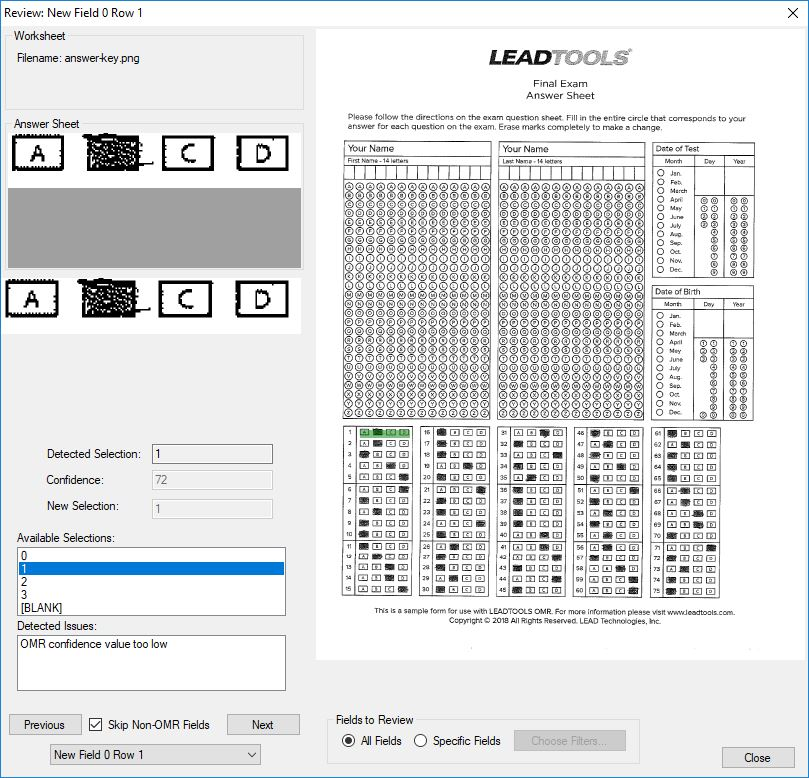

OMR Processing DemoDemonstrates functionality that intelligently analyzes the bubbles to automatically determine question groups and multiple-choice answer sets so that users can rapidly define master forms. Load an image from a file. Draw a user-defined zone to select multiple bubble sheets. Compare filled in form data to master form template. |
 |